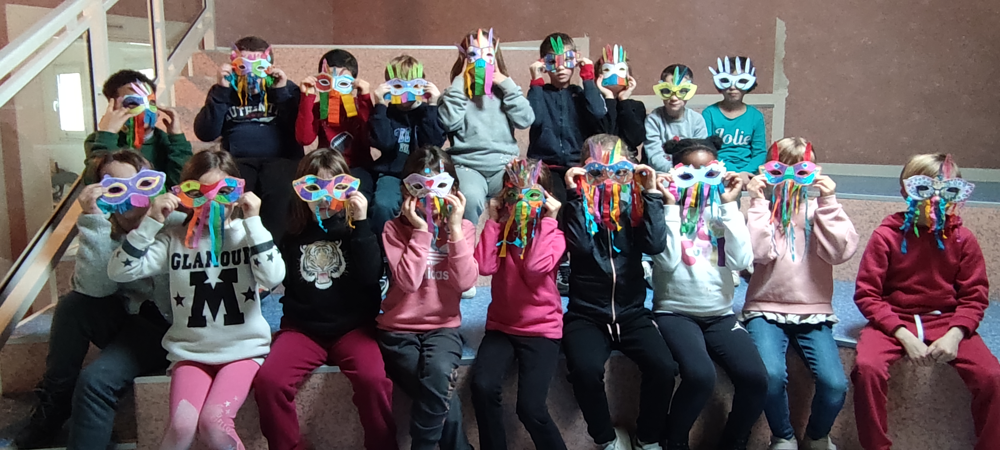

Lundi 24 février
Aujourd'hui, c'est la rentrée !
En ce jour de rentrée, les élèves de la classe 3 ont eu une drôle de surprise :un nouvel élève !
Cet événement n'a pas manqué de rendre les élèves très enthousiastes à l'idée de se faire un nouvel ami.
Nous souhaitons une bonne intégration à notre nouvel arrivant .

Mardi 25 février
Les élève de Mme Foucher, Mr Champigny, Mr Meignan et Mme Roque-Picard vont avoir un court d’escrime avec un intervenant.
L’escrime est un sport de combat. Il s’agit de l’art de toucher un adversaire avec la pointe. L'escrime est l'un des sports où le français est la langue officielle.
Chaque pays utilise sa langue pour les compétitions nationales, mais le français est obligatoire pour l’arbitrage dans les compétitions internationales.
Les élèves auront donc cours d’escrime tous les mardis entre 13h30 et 16h30 encadrés par leur enseignant et 2 intervenants de l'USEP.

Jeudi 27 février
Aujourd’hui on va voir les masques de la classe 5 !
Dans le cadre du thème de l’année (le voyage) ils ont lu l’histoire : Le loup qui voulait faire le tour du monde.
Voici donc le résumé qu’ils nous en ont fait :
Nous avons lu l’’histoire :Le loup qui voulaient faire le tour du monde
Avec Loup nous avons voyagé à Rio et à Venise. Puis, nous avons regardé un documentaire sur le carnaval de Rio et de Venise.
Alors, nous avons fabriqué nos propres masques de carnaval multicolore.
Vendredi 28 février
Aujourd’hui c’est origami avec la classe de Mme Foucher !
Les élèves de Mme Foucher on fait de l’origamis en art visuel.
Vous me direz qu’est que l’origamis ?
L'origami est l'art du pliage du papier. Le mot vient du japonais qui l'aurait lui-même emprunté au chinois.
La tradition japonaise de cet art ayant fortement influencé son histoire en Occident.
L’origami nous permet de crée des dizaines voire des centaines de forme ou d’animaux et de fleur en papier.
Voici donc en exemple certaine de leur réalisation.

Léa et Paul